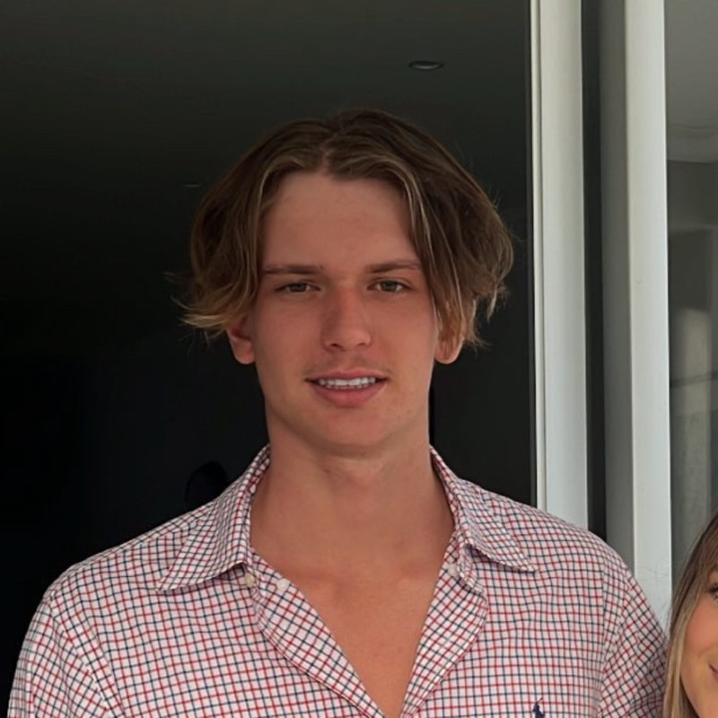
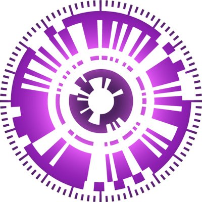
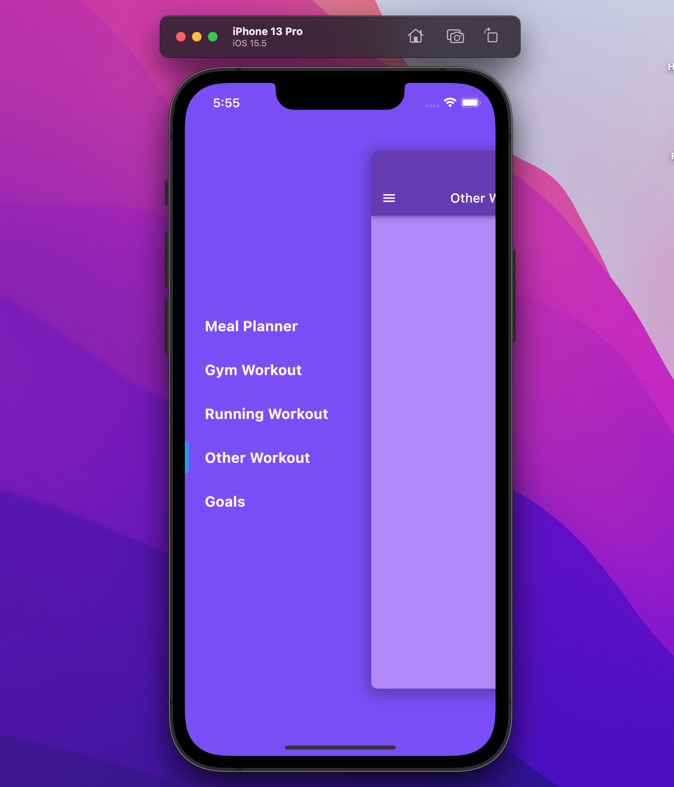
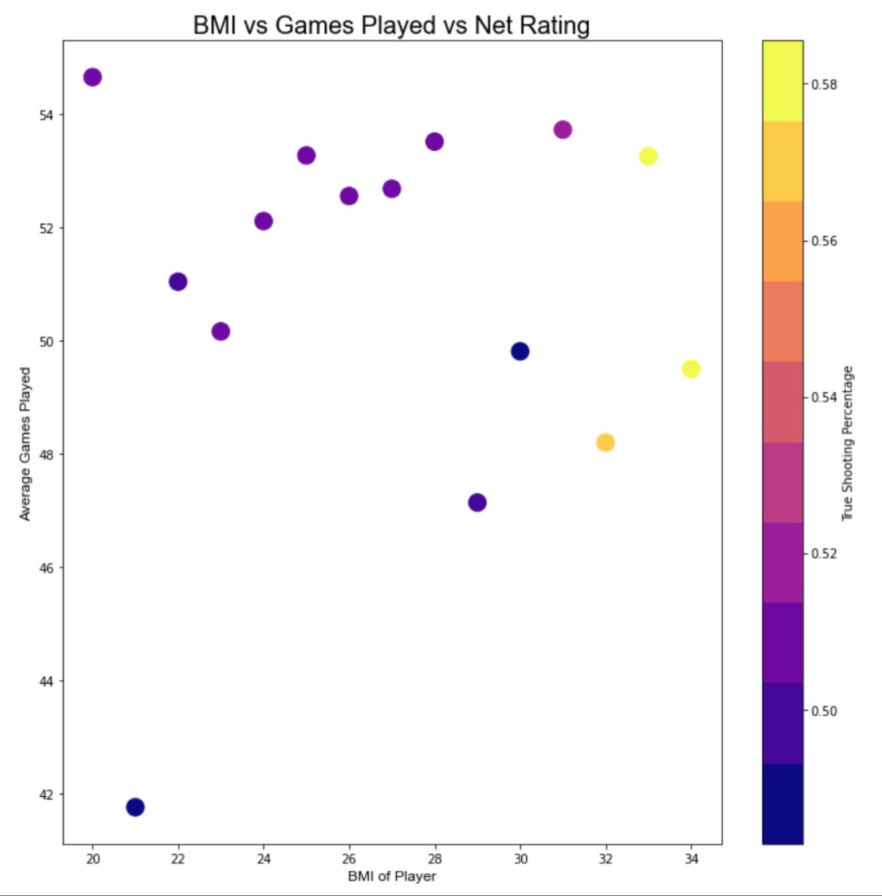
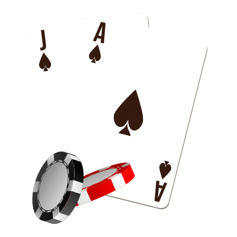

Computer Science Student
Hi there! I'm Zach, a second year computer science student at the University of Adelaide. I have a found a strong passion for programming due to the combination of problem solving and creativity. When I'm not in front of a computer, you can find me surfing (that is me in the above photo), pursing wave photography or enjoying playing/watching basketball and football. My diverse interests help to keep me well-rounded and energized. I'm excited to continue learning and growing as a software engineer and to one day make a meaningful impact in the tech industry.


I am working on a project involving computer vision, image processing, and multidimensional arrays to develop a robust automatic checkerboard detection for camera calibration in the Julia Programming language.

IOS and android app to help users achive their fitness goals.
Allows users to plan workouts, meals and personal goals.

Data visualisation project which was undertaken to answer the question “What is the optimal body type for an NBA player”

Casino style blackjack game with ASCII art interface and accurate casino probabilities